CMP(화학기계연마) 정리
1. CMP란 무엇인가
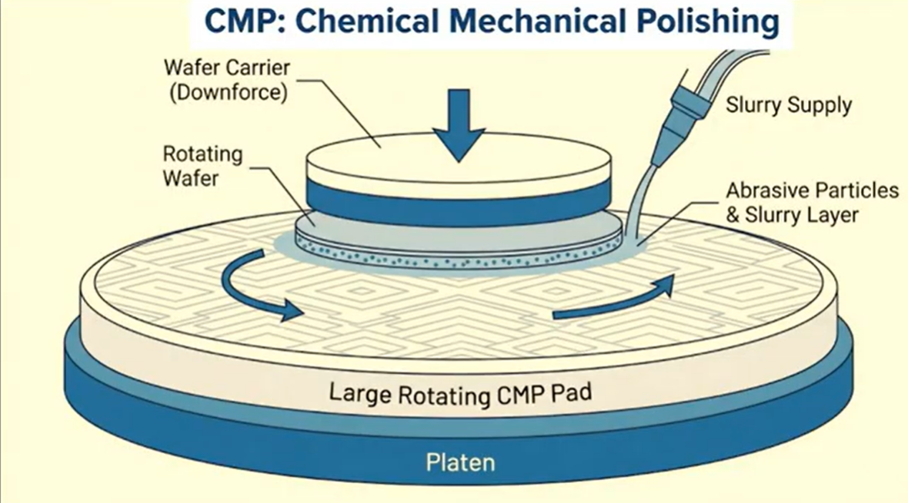
- 화학적인 반응과 물리적 반응을 동시에 사용
- 깎아낸다기 보다는 원래 상태로 만들어서 다음 공정이 잘 진행될 수 있게 세팅하는 것이 목적임
2. CMP가 필요한 이유
2-1. 쌓을수록 울퉁불퉁해지는 웨이퍼
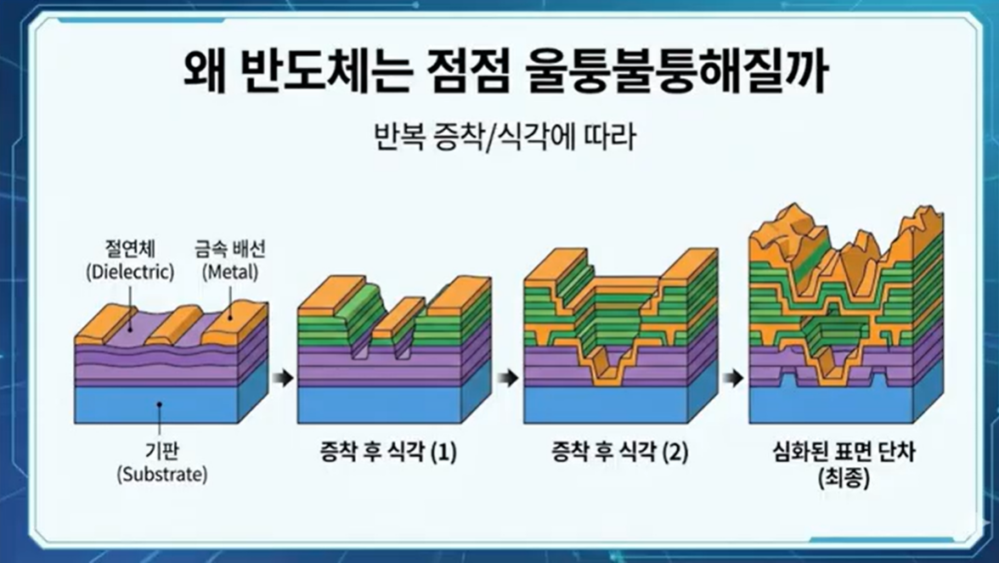
- 웨이퍼 위에 계속 쌓기 때문에 단차가 생기게 된다. 이렇게 울퉁불퉁 할 때 리소그래피 공정을 진행을 진행할 수 없다.
2-2. DOF와 미세화
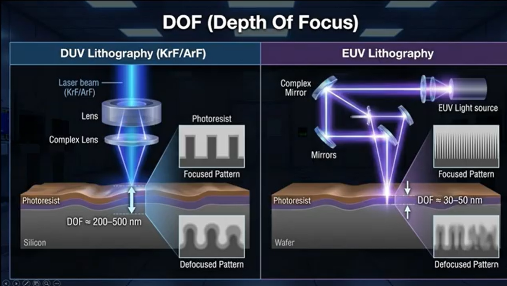
- EUV로 넘어오면서 DOF가 매우 작아졌다. 따라서 미세 공정으로 갈수록 CMP가 더 필요함을 알 수 있다.
2-3. 평탄화의 목표
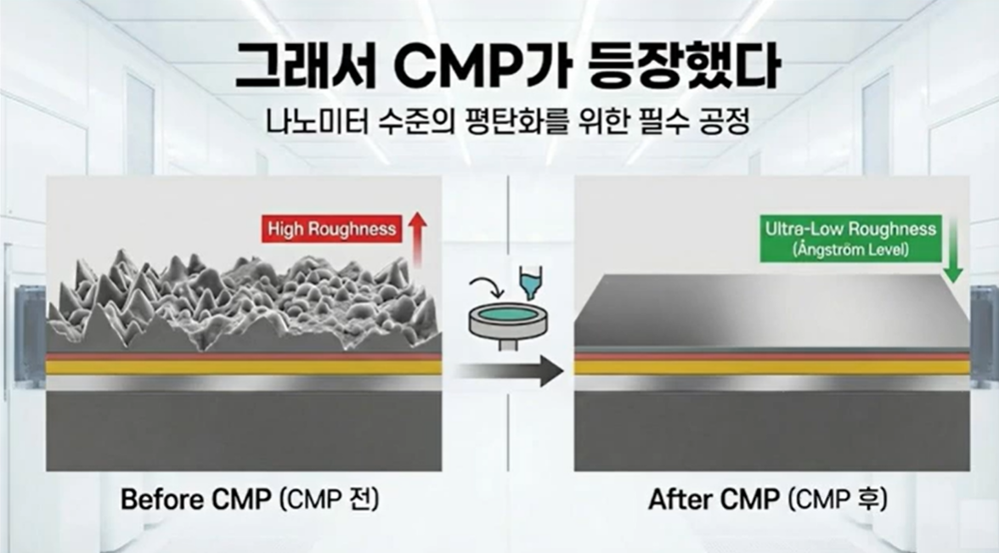
- CMP는 얼마나 깎는지가 중요한게 아니라, 튀어나온 부분만 잘 연마해서 전체적으로 고르게 만드는 지가 중요하다.
3. CMP의 원리
3-1. 화학 + 기계의 협업
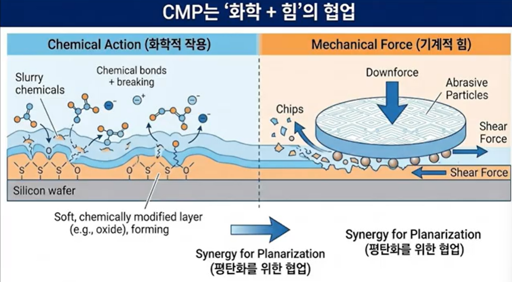
- 먼저 화학적으로 결합을 약하게 만들고 물리적인 힘으로 연마하는 방법이다.
3-2. 패드와 압력
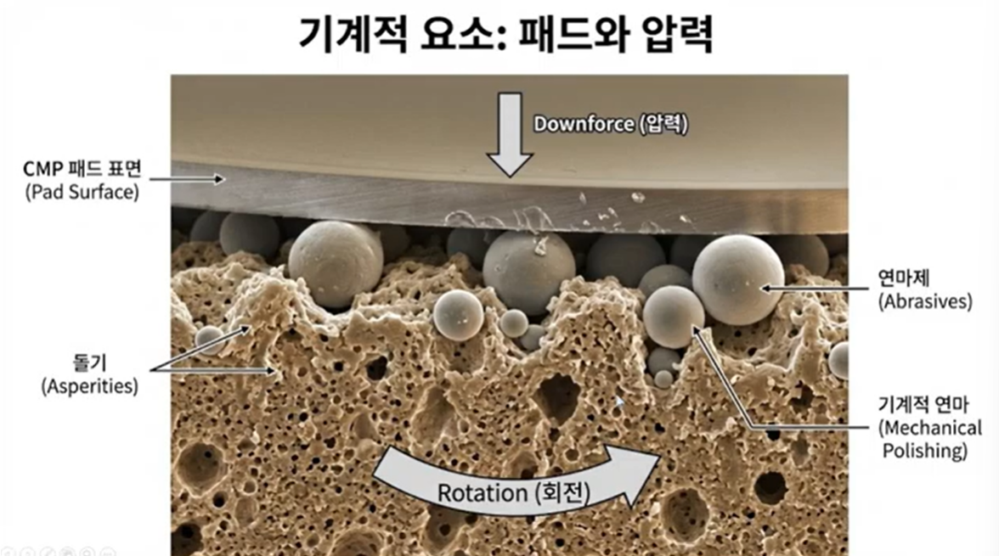
- 힘 조절을 잘해야한다는 의미에서 설명한다. 너무 약하면 연마되는 정도가 너무 떨어질 것이고, 너무 강하게 하면 스크레치가 날 것이다.
3-3. Preston 방정식
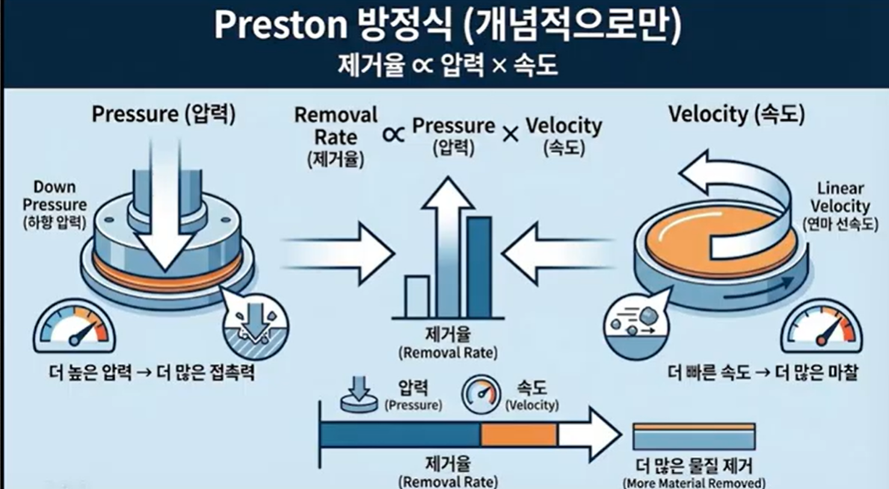
- Preston 방정식에 의하면 제거율은 압력과 속도에 동시에 비례하게 된다.
- 하지만 실제 공정에서는 슬러리의 화학적인 특성과 패드의 상태, 온도에 따라 복잡하게 변수로 존재한다.
3-4. 갈아내는 것이 아니라 벗겨내는 것
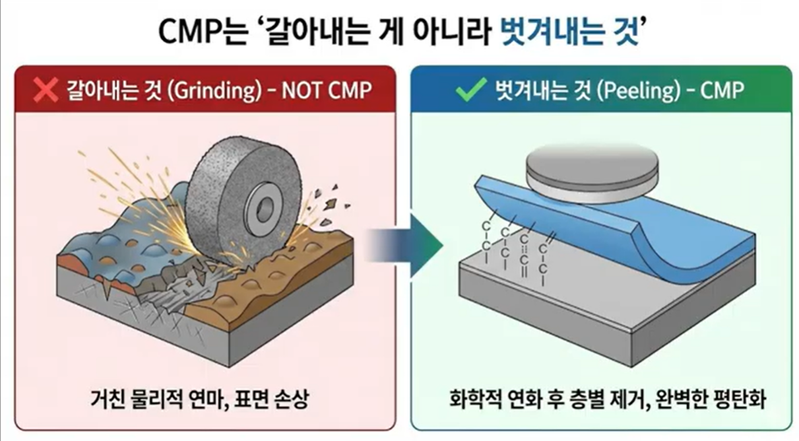
- 머릿속에서는 마치 물리적으로 갈아내는 것을 생각했겠지만, 화학적인 작용을 한 원자층들을 벗겨낸다고 생각하는 것이 더 맞다.
4. CMP 장비
4-1. 장비 구조
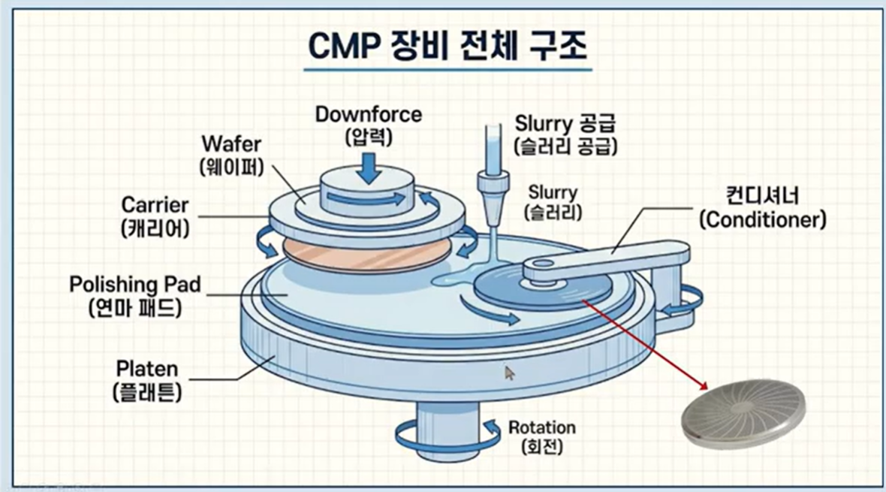
- 컨디셔너는 원판이 돌아가면서 연마 패드가 균일한 조건으로 웨이퍼를 연마할 수 있게 만들어주는 역할이다.
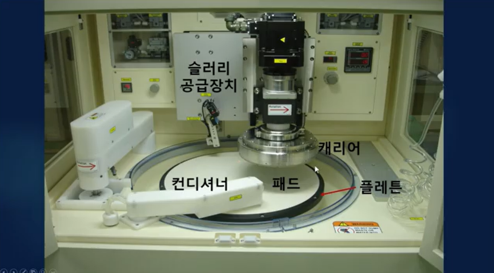
- R&D 타입의 CMP
4-2. 패드 컨디셔닝
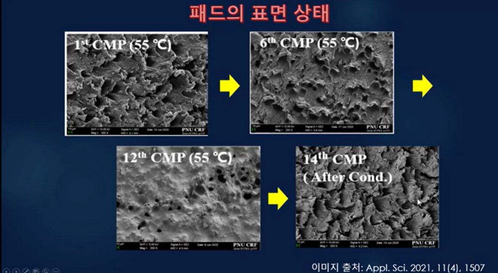
- 이처럼 패드의 상태가 달라지게 되면 웨이퍼가 동일한 조건으로 연마되지 않기 때문에 컨디셔닝이 필요한 것이다.
5. CMP 엔드포인트 검출
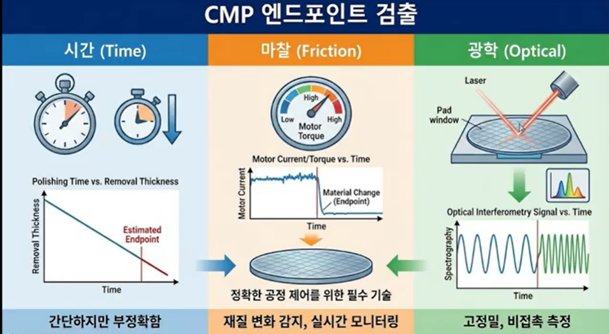
- CMP가 언제 멈춰야할지를 어떻게 아는가?
- 시간으로 따지는 것은 부정확하다.
- 마찰력을 모니터링 하다 보면 연마하고자 하는 소재가 전부 연마되었을 때 혹은 평평해졌을 때 마찰력이 달라질 것이다.
- 광학을 이용해서도 측정할 수 있다.
6. 슬러리
6-1. 슬러리의 3요소
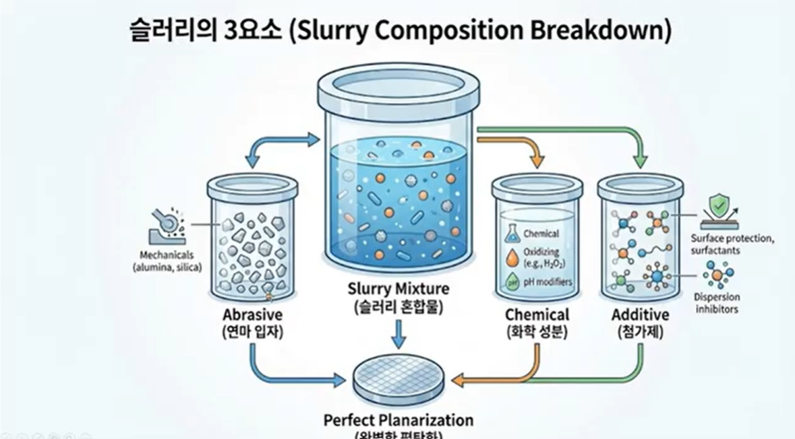
- 연마 입자가 존재해야한다.
- 산화제, pH 조절 해주는 화학성분이 있어야 한다.
- 첨가제는 연마입자가 잘 분산되어 존재할 수 있게 만들어줘야한다.
6-2. 연마제의 역할
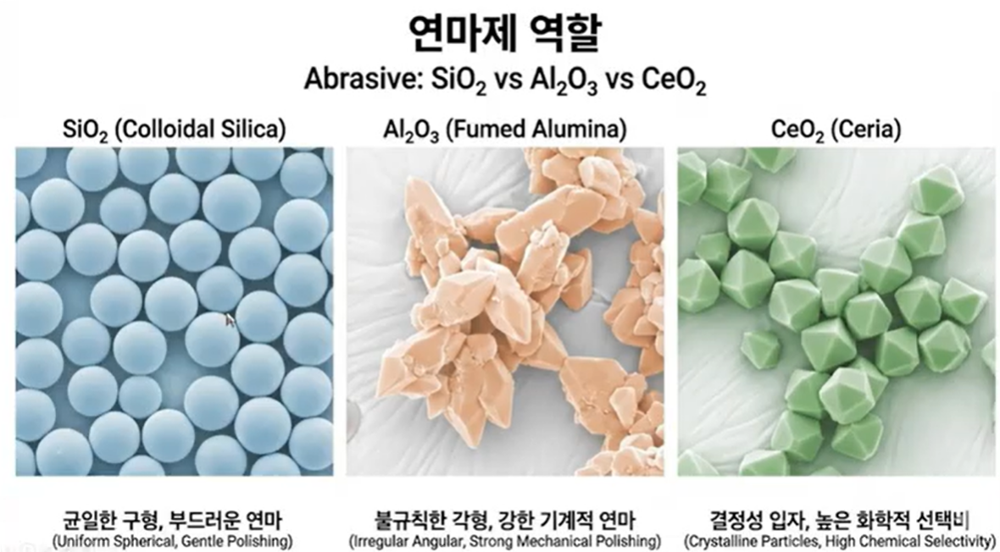
- 가장 많이 사용하는 것은 SiO₂이다. 주로 부드러운 표면을 연마할 때 사용한다.
6-3. pH의 영향
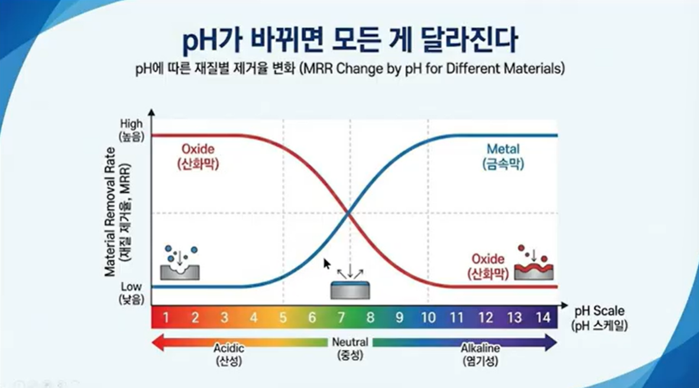
- pH에 따라서도 제거율이 많이 달라진다.
6-4. 제타 포텐셜과 입자의 분산
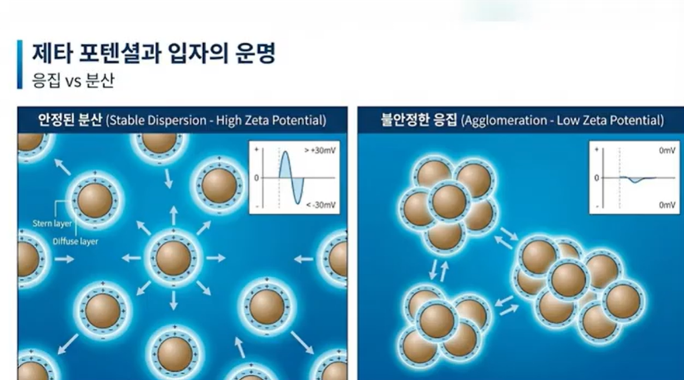
- 서로를 밀어내는 힘이 제타 힘인데, 너무 약하면 응집되고 너무 강하면 서로 멀리 떨어지려고 할 것이다. 적당한 힘으로 밀어내서 잘 분산되어서 존재해야 한다.
- 뭉치게 되면 너무 큰 입자가 되어 스크래치가 날 수 있다.
7. CMP 결함
7-1. Dishing과 Erosion
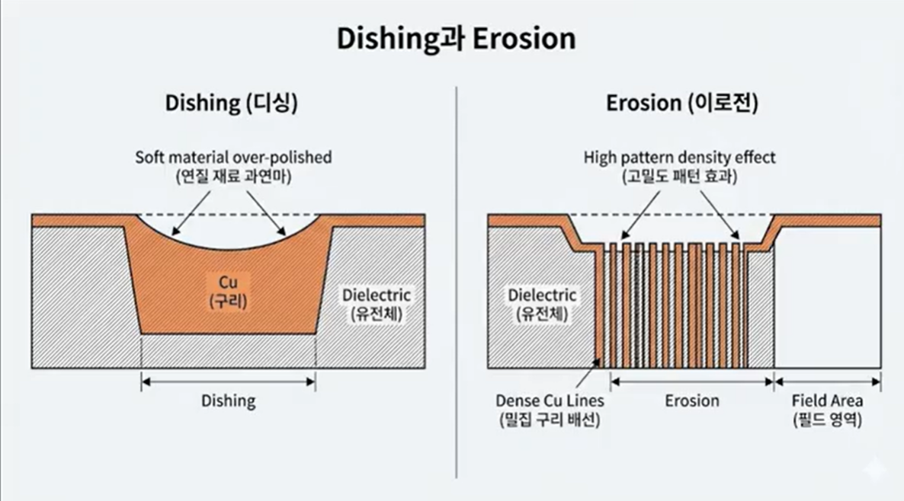
- Dishing 부터 보자면 절연체인 SiO₂는 매우 하드한 물질이고, Cu는 상대적으로 유연한 물질이다. 그래서 동시에 연마를 하다보면 유연한 재료에서 움푹 파이듯이 연마된다.
- Erosion에서는 패턴이 밀집된 위치에서 연마가 더 많이 된다.
7-2. 스크래치와 파티클
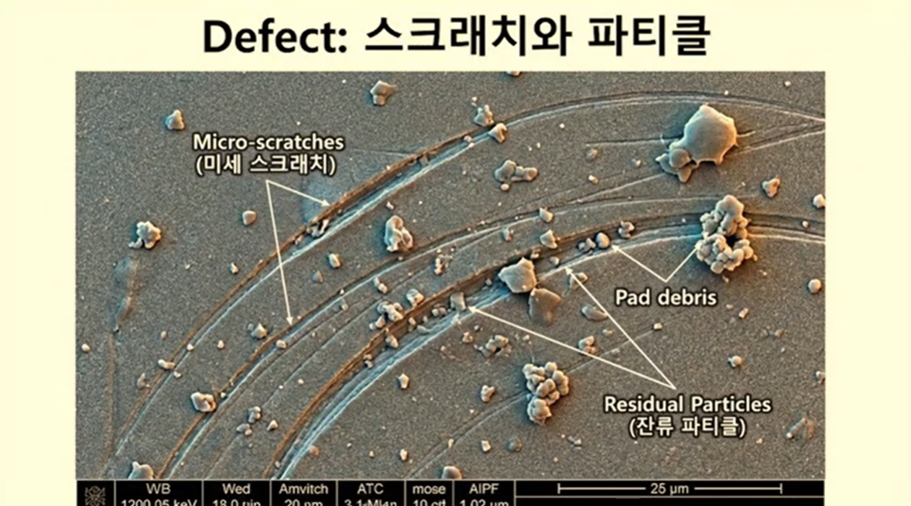
- CMP를 하고 나면 이런 스크래치와 파티클들이 발생하게 된다. 따라서 CMP를 진행하고 난 다음에는 Cleaning 공정을 진행해야 한다.
7-3. ‘둥둥’ 현상 (패턴 의존성)
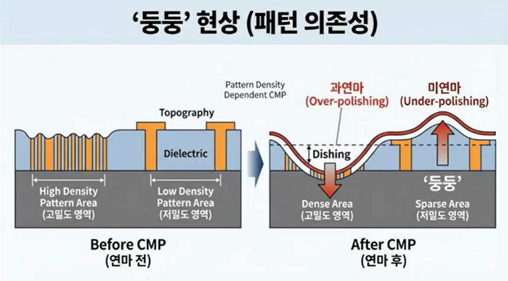
- 웨이퍼가 살짝 뜨는 현상이 생길 수 있다.
- 패턴이 밀집된 부분은 덜한데 패턴이 밀집되지 않는 지역에서는 연마가 잘 안될 수 있다.
8. 공정 통합과 활용
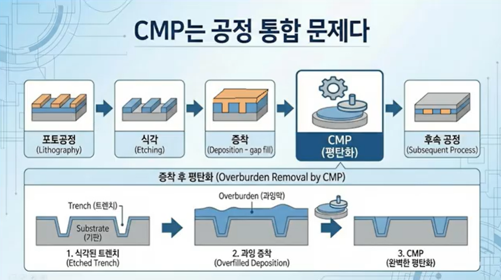
- CMP 공정은 단독 공정이 아니고, 앞 뒤 공정을 잘 알고 있어야 한다.
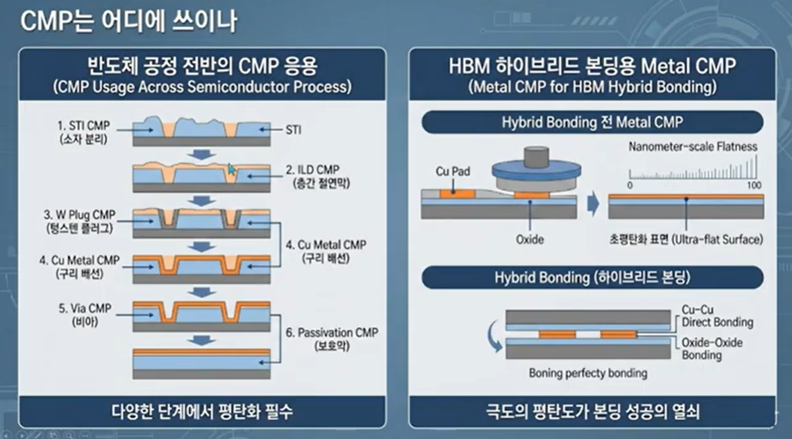